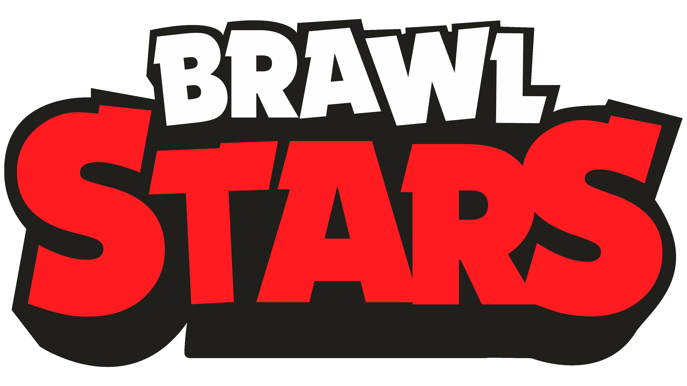
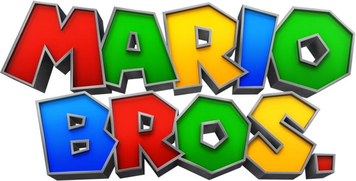

Me gusta jugar videojuegos, ya sean en una consola o en la PC o en el teléfono. También me gusta ver videos en YouTube, solo veo YouTube sobre los juegos que me gustan.
Casi siempre juego algún juego, ya sea una partida o incluso 1 o 2 horas. En los viajes al colegio me gusta mucho jugar en teléfono, ya sea jugar brawl stars o Clash Royale
En general juego demasiado, pero cuando no tengo ninguna tarea, cuando no tengo ninguna, pues si es bastante lo que juego puede que 5 o 6 horas o incluso menos, pero es un aproximado, pero cuando hay tareas si es muy reducido a veces solo es en el teléfono yendo o regresando de kinal que puede ser 2 horas o menos, pero si termino las cosas rápido puedo llegar a jugar 1 hora en la tele.
Me comenzaron a gustar los juegos cuando tenía muy corta edad empezando a jugar en la Wii con el super smash y el Mario bros me encantaba jugar estos juegos con mis hermanos, ya que me la pasa bien (aunque de pequeño la mayoría de veces perdía) pero luego comencé a jugar con el gamecube y luego de unos años mi papá nos compró la Play 4 y con los primeros juegos venían el FIFA 17 y me encanta jugar ese juego a día de hoy.